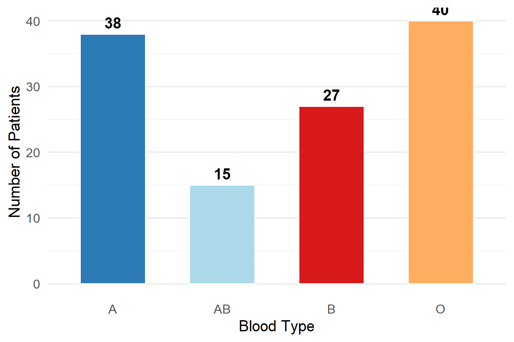
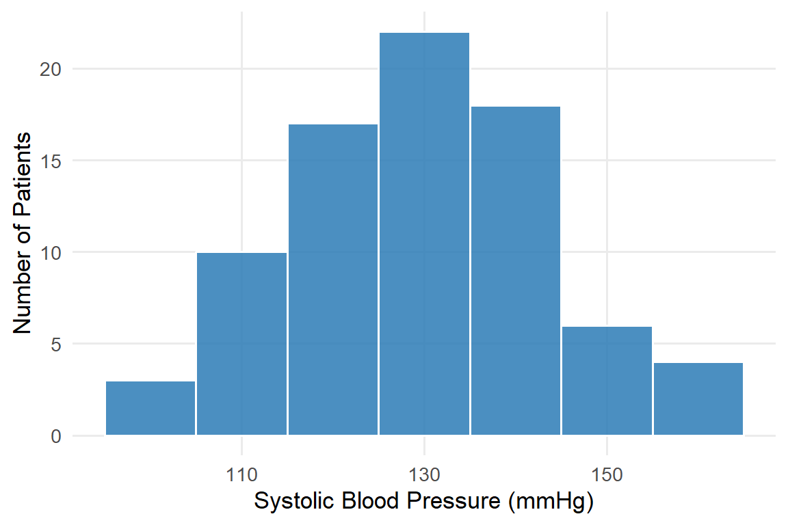
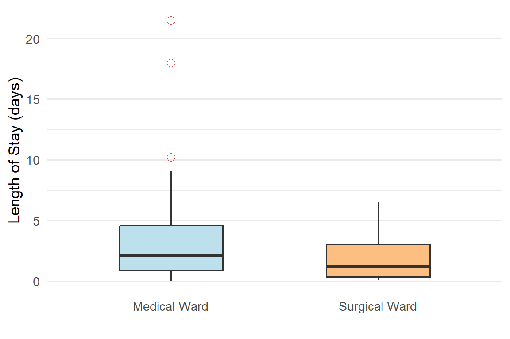

Imagine you have blood pressure readings from 80 patients on your ward. Looking at 80 individual numbers tells you very little. But if someone says “the average systolic BP is 138 mmHg and most patients fall between 120 and 155 mmHg” — now you have a clear picture.
Data summarization is the process of turning raw data into meaningful, easy-to-understand information using numbers and charts. This is one of the most practical skills in clinical nursing and health research.
3 Numerical Summarization
Numerical summarization uses numbers to describe the key features of data. There are two important aspects we want to describe:
Central tendency — Where is the “middle” or “typical” value?
Variability — How spread out are the values?
3.1 Measures of Central Tendency
3.1.1 Mean (Arithmetic Average)
The mean is calculated by adding all values and dividing by the number of observations.
The mean works best for continuous or discrete numerical data that is roughly symmetric (not heavily skewed) and has no extreme outliers. A single extreme value can pull the mean far from the typical value.
3.1.2 Median
The median is the middle value when all observations are arranged in order.
If \(n\) is odd: the median is the value at position \(\dfrac{n+1}{2}\)
If \(n\) is even: the median is the average of the two middle values at positions \(\dfrac{n}{2}\) and \(\dfrac{n}{2}+1\)
Warning⚠️ When to Use the Median
The median is preferred when data is skewed or has outliers, because it is not affected by extreme values. It is also the appropriate measure for ordinal data.
3.1.3 Mode
The mode is the value that appears most frequently in the data.
A dataset can have one mode (unimodal), two modes (bimodal), or no mode (all values appear equally).
The mode is the only measure of central tendency appropriate for nominal data.
3.1.4 Choosing the Right Measure
ct <-data.frame(Measure =c("Mean", "Median", "Mode"),`Best For`=c("Numerical data (continuous or discrete), symmetric distribution","Numerical data with skewness or outliers; Ordinal data","Nominal data; finding the most common category" ),`Nursing Example`=c("Average patient age, average blood glucose","Average length of hospital stay (skewed by long-stay patients)","Most common blood type on a ward, most frequent pain score" ))kable(ct, col.names =c("Measure", "Best For", "Nursing Example"),align =c("l","l","l")) |>kable_styling(bootstrap_options =c("striped","hover","bordered"),full_width =TRUE, font_size =13) |>column_spec(1, bold =TRUE, color ="#2c7bb6")
Table 3.1: Choosing the Right Measure of Central Tendency
Measure
Best For
Nursing Example
Mean
Numerical data (continuous or discrete), symmetric distribution
Average patient age, average blood glucose
Median
Numerical data with skewness or outliers; Ordinal data
Average length of hospital stay (skewed by long-stay patients)
Mode
Nominal data; finding the most common category
Most common blood type on a ward, most frequent pain score
3.2 Measures of Variability
Knowing the average alone is not enough. Two wards might have the same average patient age but very different spreads — one ward may have all patients aged 55–65, another may have patients aged 20–90. Variability tells us how spread out the data are.
The range only uses two values (max and min) and is very sensitive to outliers.
3.2.2 Variance
The variance measures the average squared distance of each value from the mean.
Population variance:\[\sigma^2 = \frac{\sum_{i=1}^{N}(x_i - \mu)^2}{N}\]
Sample variance (used more often in practice): \[s^2 = \frac{\sum_{i=1}^{n}(x_i - \bar{x})^2}{n-1}\]
Where:
\(\mu\) = population mean, \(\bar{x}\) = sample mean
\(N\) = population size, \(n\) = sample size
\(n-1\) in the denominator corrects for the fact that we’re using a sample
3.2.3 Standard Deviation
The standard deviation (SD) is the square root of the variance. It is expressed in the same units as the original data, making it much easier to interpret than variance.
Charts and graphs turn numbers into visual stories. The correct chart depends on the data type.
4.1 Bar Chart
Used for categorical data (nominal or ordinal). Each bar represents a category; the height shows the count or percentage.
blood <-data.frame(type =c("A", "B", "AB", "O"),count =c(38, 27, 15, 40))ggplot(blood, aes(x = type, y = count, fill = type)) +geom_bar(stat ="identity", width =0.6, color ="white") +geom_text(aes(label = count), vjust =-0.5, size =4.5, fontface ="bold") +scale_fill_manual(values =c("#2c7bb6","#abd9e9","#d7191c","#fdae61")) +labs(x ="Blood Type", y ="Number of Patients") +theme_minimal(base_size =13) +theme(legend.position ="none",panel.grid.major.x =element_blank())

Figure 4.1: Bar Chart: Blood Types of 120 Patients in a Medical Ward
4.2 Histogram
Used for continuous numerical data. Bars are drawn over class intervals (ranges of values); bars touch each other because the data is continuous.
set.seed(123)bp_data <-data.frame(sbp =round(rnorm(80, mean =130, sd =15)))ggplot(bp_data, aes(x = sbp)) +geom_histogram(binwidth =10, fill ="#2c7bb6", color ="white", alpha =0.85) +labs(x ="Systolic Blood Pressure (mmHg)", y ="Number of Patients") +theme_minimal(base_size =13) +theme(panel.grid.minor =element_blank())

Figure 4.2: Histogram: Systolic Blood Pressure of 80 Patients
Tip💡 Bar Chart vs Histogram
Bar Chart
Histogram
Data type
Categorical
Continuous numerical
Bars
Separated (gaps)
Touching (no gaps)
X-axis
Categories
Numerical ranges
4.3 Box Plot (Box-and-Whisker Plot)
A box plot summarizes the distribution of numerical data using 5 key values (the five-number summary):
Value
Description
Minimum
Smallest value (excluding outliers)
Q1
25th percentile (lower quartile)
Median (Q2)
50th percentile — middle value
Q3
75th percentile (upper quartile)
Maximum
Largest value (excluding outliers)
The Interquartile Range (IQR) = Q3 − Q1 represents the middle 50% of data. Points beyond 1.5 × IQR from Q1 or Q3 are marked as outliers (○).
set.seed(99)stay <-data.frame(days =c(rexp(50, 0.3), rexp(50, 0.5)),ward =rep(c("Medical Ward", "Surgical Ward"), each =50))ggplot(stay, aes(x = ward, y = days, fill = ward)) +geom_boxplot(width =0.5, outlier.color ="#d7191c",outlier.shape =1, outlier.size =3, alpha =0.8) +scale_fill_manual(values =c("#abd9e9","#fdae61")) +labs(x ="", y ="Length of Stay (days)") +theme_minimal(base_size =13) +theme(legend.position ="none",panel.grid.major.x =element_blank())

Figure 4.3: Box Plot: Comparing Length of Hospital Stay Between Two Wards
4.4 Choosing the Right Chart
charts <-data.frame(`Chart Type`=c("Bar Chart", "Pie Chart", "Histogram", "Box Plot"),`Data Type`=c("Categorical (Nominal/Ordinal)","Categorical (Nominal) — proportions","Numerical (Continuous)","Numerical (Continuous/Discrete)"),`What It Shows`=c("Frequency or percentage of each category","Proportion of each category as a slice of the whole","Distribution shape, spread, and central tendency","Median, spread, quartiles, and outliers" ),`Nursing Example`=c("Number of patients by blood type","Proportion of patients by diagnosis","Distribution of patient ages or blood pressure","Comparing recovery time between two wards" ))kable(charts,col.names =c("Chart Type","Data Type","What It Shows","Nursing Example"),align =c("l","l","l","l")) |>kable_styling(bootstrap_options =c("striped","hover","bordered"),full_width =TRUE, font_size =13) |>column_spec(1, bold =TRUE, color ="#2c7bb6")
Table 4.1: Guide to Choosing the Right Chart
Chart Type
Data Type
What It Shows
Nursing Example
Bar Chart
Categorical (Nominal/Ordinal)
Frequency or percentage of each category
Number of patients by blood type
Pie Chart
Categorical (Nominal) — proportions
Proportion of each category as a slice of the whole
Proportion of patients by diagnosis
Histogram
Numerical (Continuous)
Distribution shape, spread, and central tendency
Distribution of patient ages or blood pressure
Box Plot
Numerical (Continuous/Discrete)
Median, spread, quartiles, and outliers
Comparing recovery time between two wards
5 Key Takeaways
Note📝 Chapter 2 Summary
Numerical summarization uses measures of central tendency (mean, median, mode) and variability (range, variance, SD) to describe data with numbers.
The mean is best for symmetric numerical data; the median is better when data is skewed or has outliers; the mode is used for categorical data.
The standard deviation (SD) is the most commonly reported measure of spread in clinical research, expressed in the same units as the data.
Pictorial summarization uses charts: bar charts for categorical data, histograms for continuous data, and box plots to compare groups and identify outliers.
Always choose the correct summary measure and chart based on the data type — using the wrong one leads to misleading conclusions.
6 Examples
6.1 Example 1: Calculating Mean, Median, and SD
A nurse records the resting heart rate (beats per minute) of 9 patients:
Interpretation: The average heart rate is 79.7 ± 13.5 bpm. The relatively large SD reflects the wide spread, largely influenced by the patient with 110 bpm.
6.2 Example 2: Choosing the Right Summary and Chart
A hospital administrator records the diagnosis of 200 patients admitted last month and wants to summarize the data. A research nurse records the length of stay (days) for the same 200 patients.
Tip✅ Solution
Variable
Data Type
Best Summary Measure
Best Chart
Diagnosis
Categorical – Nominal
Mode (most common diagnosis)
Bar Chart
Length of stay
Numerical – Continuous (likely skewed)
Median + IQR
Box Plot or Histogram
Why median for length of stay? Hospital stays are almost always right-skewed — most patients stay a few days, but a small number may stay for weeks or months. These long-stay patients would pull the mean upward, making it misleading. The median better represents the “typical” patient.
7 Exercises
Caution✏️ Exercise 1
A nurse records the body temperature (°C) of 10 patients at 8:00 AM:
(e) Calculate the standard deviation. Show all steps.
(f) One patient has a temperature of 40.2°C. How does this value affect the mean compared to the median? Which measure would you report to the physician, and why?
Caution✏️ Exercise 2
A community health nurse surveys 50 elderly patients and records:
Gender (Male / Female)
Systolic blood pressure (mmHg)
Self-rated health (Poor / Fair / Good / Very Good / Excellent)
For each variable, state:
(a) The data type.
(b) The most appropriate measure of central tendency.
(c) The most appropriate chart to display the data.
Caution✏️ Exercise 3
The number of patient falls recorded each month over 12 months in a hospital ward are:
(a) Calculate the mean and median number of falls per month.
(b) Draw a bar chart (by hand or describe what it would look like) showing the frequency of each number of falls.
(c) The ward manager wants to set a monthly target. Should she use the mean or median as the baseline? Explain.
End of Chapter 2
Note📚 Coming Up Next
Chapter 3: Random Variable and Probability Distribution — We will learn what a random variable is, how probabilities work, and why the normal distribution (bell curve) is so important in health science research.